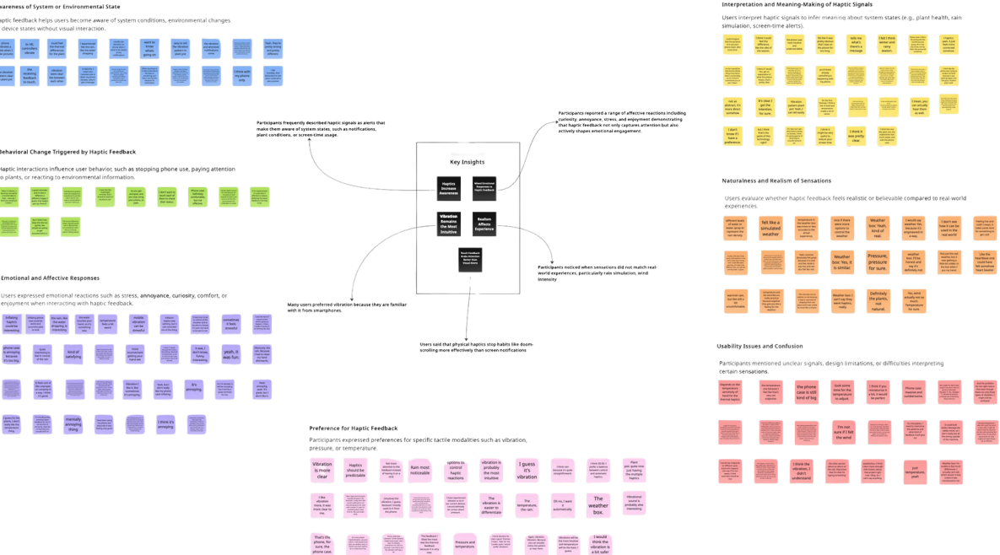
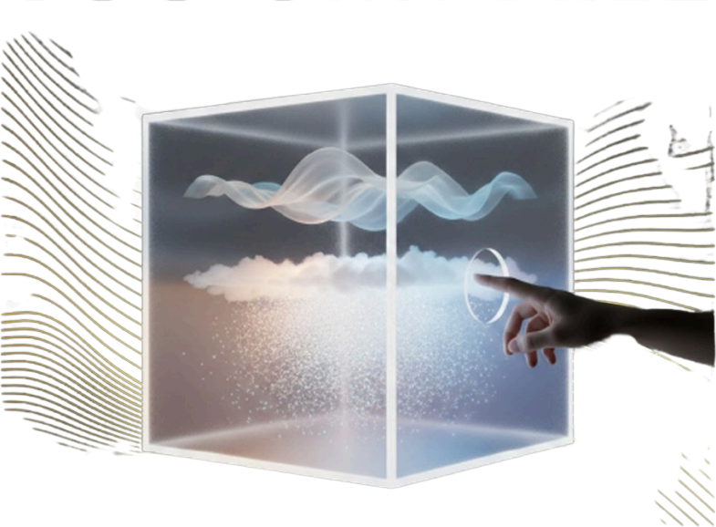
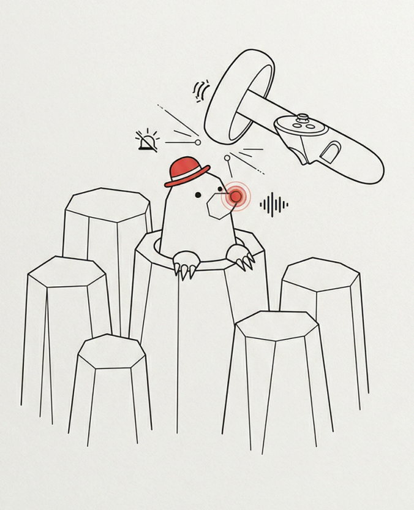

Grounded in cognitive science, I design AI products that stay honest about what they know. My work sits where product definition meets implementation — from user interviews and PRDs to retrieval pipelines, confidence-aware interfaces, and design decisions validated by research.
Cognitive science gives me the method — how people actually perceive, decide and act. HCI gives me the craft. AI gives me the material. What I build sits where all three meet.
Thesis on measuring cognitive load in 3D holographic vs. 2D display. Expected graduation August 2027.
Psychology and biological neuroscience. Bachelor thesis graded 1.0 — the highest mark in the German grading scale.
Owned an AI training knowledge assistant end to end: user interviews, personas, positioning, feature list, user flow, PRD, Figma prototype, and the retrieval pipeline behind it.
Knowledge-graph metadata modelling for a national heritage data infrastructure; Figma interaction prototypes for 3D collections; usability research with 300+ VR visitors that changed the installation format from head-mounted to hand-held devices.
Built a 300+ case evaluation library with a daily feedback loop into model iteration, and designed prompts to control output diversity. Worked across time zones with a US engineering team.
Designed and executed the controlled experiment that became my bachelor's thesis — N=50 randomised, five measurement dimensions.
Define the problem precisely, build something real enough to test, and let evidence decide — including when the evidence says the elegant solution is wrong. In AI work this means treating the interface contract as the product: what the system claims, how it shows its sources, and how it behaves when it does not know.
A retrieval-augmented assistant for employee training in the production-planning department of a German automotive OEM in China. I owned the whole chain: interviews, product definition, prototype, PRD, RAG pipeline, and the interface contract that keeps a probabilistic system honest.
New joiners spent an average of 45 minutes locating a single answer inside several hundred pages of training material. Asking a colleague consumed about 15 minutes of that colleague's working time. The content existed; the path to it did not.
The brief asked for a knowledge-management tool. I argued for a different framing: not "find the document" but "close the question". Training questions are procedural — a new joiner usually does not yet know what the right question is, so a search box optimises the wrong moment. That reframing decided the architecture and the interface.
Interviews revealed that new joiners' real problem was not content volume but trust: they could not tell a confident answer from a confident-sounding wrong one, because the source material was too long to verify. That finding is why the system has a confidence model, a source trail on every answer, and an explicit "I don't know" path.
If the assistant is wrong, the cost is not a bad sentence — it is a new employee acting on a confident error in a production environment. Design for that, not for the demo.
Four states the interface has to support, and what the user is owed in each. This is the part of the work I would put in front of a design review first.
Every question is routed by intent before retrieval: a procedural question pulls the step sequence in order, a factual question pulls a short cited excerpt, a comparative question pulls two sources and reconciles them. The same layer handles language auto-detection, so a user can ask in the language they think in.
Grounding is not an implementation detail — it is what the user experiences. Every answer carries its passage, image evidence where the source contained a diagram, and a follow-up suggestion. Short-term memory keeps multi-turn threads coherent.
The human stays in control at three points: choosing the intent path, answering a follow-up question, and approving the final action. The system never decides what the user's question was meant to be — it asks.
A static list of the most-asked questions with curated answers — faster to build and trivially accurate.
It fails whenever the question is not on the list, which is most of a new joiner's experience: they do not yet know what the FAQ contains, so they cannot search for it.
Why rejected: it optimises for retrieving known questions. The population with the sharpest need is the one least able to name the question.
A clean transcript with a fluent prose answer — the most familiar pattern, and the one that demos best.
But prose is the format in which a wrong answer is most persuasive, and the format that hides provenance. A user reading a paragraph cannot tell which sentence came from the policy and which was generated.
Why rejected: it optimises for the first thirty seconds and leaves the user unequipped for the moment they act on the answer.
I report the adoption figure as a target. The MVP was delivered and validated; sustained-use adoption was the next measurement, not one I can quote today. Separating "we set this bar" from "we cleared this bar" is the difference between a portfolio claim and a marketing claim.
A multimodal environmental terminal that turns abstract weather data into immediate physical sensation — temperature, airflow and real water droplets. Led the project as originator, hardware lead and interaction-logic designer.
We live in an age of visual information overload: a forecast gets compressed into numbers, percentages and icons, producing perceptual numbness. You can read 5°C without connecting it to cold on your skin. The station's premise was to break that gap — to move the design question from "information display" to "sensory mapping".
Custom precision shower heads produced with FDM/SLA 3D printing, laser-cut and hand-assembled into a fully enclosed interaction chamber. An Arduino Uno coordinates the system, driving high-power thermoelectric and hydrodynamic modules through MOSFETs.
The core engineering bottleneck was thermal inertia. I moved the architecture from a single-Peltier approach to a dual-semiconductor independent temperature-control system, which substantially improved response sensitivity when simulating seasonal transitions. A sealed isolation structure decouples the electronics from the water circuit physically.
13 participants with HCI and engineering backgrounds, 20-minute semi-structured interviews, coded in Miro within the Braun & Clarke framework, yielding 7 core interaction dimensions.

Sensory fidelity — the combined temperature and airflow successfully triggered an instinctive "cold winter wind" response. Cognitive conflict — simulated rain was described as a "spa experience" rather than natural rain, exposing the gap between digital simulation and organic intuition. Usability barrier — the need to dry your hands after interaction significantly reduced willingness to use it long-term.
A 3D digital twin of the Bauhaus Energy Hub — a "living lab" exploring sustainable living and energy self-sufficiency — built to solve a problem where data real-time-ness and interaction intuitiveness were in direct conflict.
Professional engineers were drowned in raw data, while non-technical users could not locate a fault point inside a complex 3D model. One interface could not serve both. As UI/UX lead I set the design anchor at adaptive perception: a dynamic interaction layer that adjusts the mapping between 3D space and UI hierarchy according to task context and the user's expertise.
For facility maintenance engineers: high-density real-time curves, raw sensor logs and the full structural cutaway of the building — complete data transparency.
For non-technical management: raw IoT values translated into heat maps and status signals — zero-barrier monitoring.
"Adaptive design is not just about changing layouts, but about aligning technology with the user's cognitive boundaries."
3D modelling of the living-lab environment and its furniture in Blender, optimised for a real-time engine; integration of Unity 3D with IoT data mapping; and a responsive web UI layer carrying the two adaptive modes.
The result is not a static list of information but a system that changes what it shows according to the current task and the user's professional background — a direct application of cognitive-load principles to industrial monitoring.
A randomised controlled experiment comparing Pepper's Ghost holographic display against a conventional 2D screen in a maritime museum exhibition — designed, executed and analysed independently.

N=50 participants, randomly assigned. Five measurement families: presence, visitor experience (education / aesthetics / entertainment / escapism), experience attitude, cognitive load (ECL / GCL / ICL), and knowledge retention via a post-test. Analysed in R with Shapiro-Wilk normality testing, then Mann-Whitney U for non-normal variables and two-sample t-tests with effect sizes for normal ones.
The holographic condition scored better on visual appeal — but no measurement dimension reached statistical significance. Rather than stopping there, I traced the mechanism: a non-interactive hologram turns the visitor into a passive observer. Interactivity, not visual novelty, is what drives immersion and engagement.
That insight closes a method loop with my other work — the VR installation research, where head-mounted displays were replaced with hand-held devices and interaction elements were added for exactly the same reason. An honest null result that produced a transferable design principle is worth more than a positive number.
A multiplayer VR game with the core task of synchronising player action across multiple headsets. Unity 3D, Meta Quest 2, OpenXR and Blender; I was the originator, hardware lead and interaction designer.
Multiple players moving through one physical laboratory means any coordinate drift causes collisions in reality. Solved with a unified spatial-anchor calibration, normalising coordinates across headsets in a 360° environment to preserve both safety and competitive fairness.
Virtual environments lack physical resistance — a hammer passes straight through the target and breaks immersion. Solved with multimodal compensation: colour change on impact plus OpenXR controller vibration, synchronised so the brain infers that a collision occurred.

A cross-disciplinary team project bringing a historical narrative scene into VR, developed for the 2022 Coding da Vinci Hackathon in Germany, where it won first place in the VR track. The award sits alongside the provincial photography prize and a school English-drama award — early evidence of a persistent pull toward narrative, visual composition and cross-disciplinary work.
Chinese (native) · German (DSH-2) · English (IELTS 7.0) · six years living and working in Germany.
Client identity, department codes, internal system names, employee data and absolute person-hour figures have been abstracted throughout this document. Source excerpts shown in prototypes are written for demonstration and are not client documents.